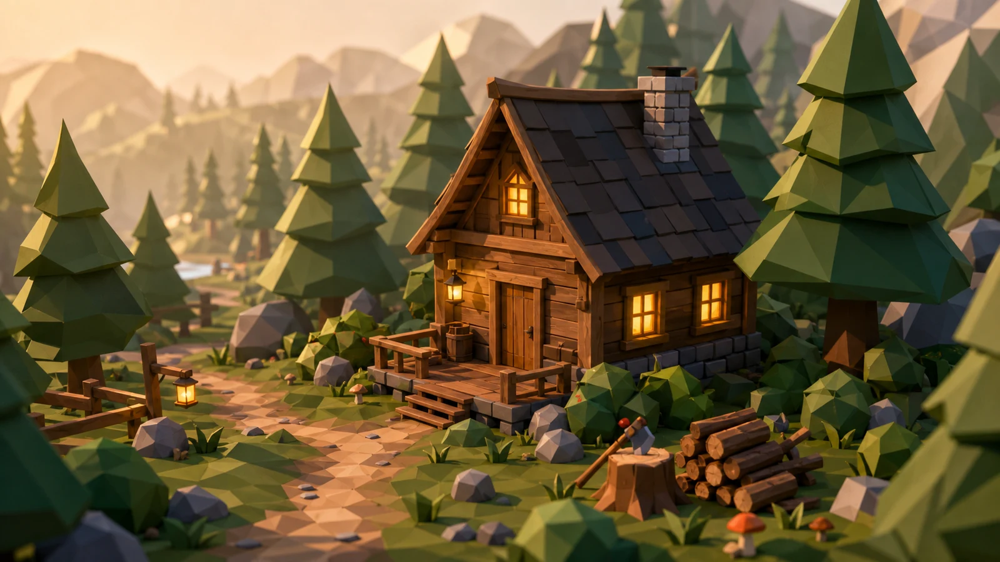
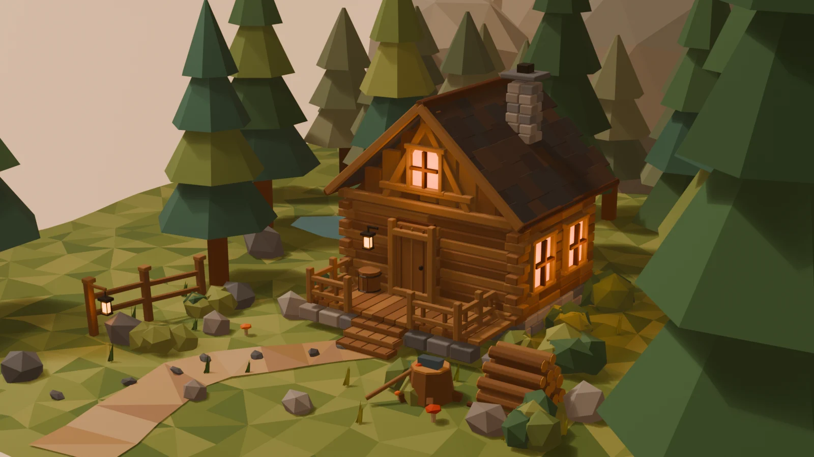

One image in.
Fifteen Blender scenes out.
Same cabin. Same one-line brief. Fourteen GPT‑5.6 configurations across Luna, Terra and Sol, plus GPT‑5.5 as a baseline.
More thinking bought detail. It did not buy quality in a straight line.
- 15 / 15
- finished scenes
- 3h 16m
- end-to-end runtime
- 24.68M
- reported tokens1
- 2:07
- fastest complete run


Drag to orbit · Pinch or scroll to zoom
Static preview
Sol Ultra scored two points above Sol xhigh while using 3.47× the tokens and 3.25× the time.
01 / Setup
A deliberately under-specified test.
The models received a picture, not a scene graph, asset pack, or modeling recipe. The folder name was the only variable in the prompt.
Exact prompt
“Build this in Blender. Create and work in a subfolder named {run}.”
- Input
- One byte-identical 1672 × 941 PNG
- Environment
- Codex, Ubuntu, Blender 5.0.1
- Deliverable
- Editable .blend, Python builder, final render
- Coverage
- low / medium / high / xhigh; ultra on Sol and Terra
- Runs
- One primary attempt per configuration
02 / Outputs
Every render, as delivered.
Images are re-encoded for the web; native framing is preserved with no crop or retouch. Open any result for its full audit, scene complexity and source files.
Showing 15 outputs
03 / Scoreboard
Quality versus spend.
Visual scores are human judgments anchored to the reference at 100. Tokens include the marginal usage of subagents where spawned.
Visual score vs. reported tokens
| Run | Visual | Time | Tokens | Objects | Script |
|---|
04 / Findings
Model size did not predict the best choice.
01
Sol Ultra led on fidelity. Sol xhigh was more efficient.
Sol Ultra was the closest reconstruction at 79/100. Sol xhigh reached 77 with 29% of the tokens and 31% of the time. That last two-point gain cost 6.74M extra tokens and 36 minutes.
02
Sol Light delivered the best value.
At 665K tokens and 5:12, it scored 66, placed sixth overall and beat nine configurations, including multiple medium and high runs. Its 167-line script brute-forced 566 mesh objects but composed them well.
03
Thinking effort was visibly non-monotonic.
Sol medium and high broke their roof geometry. Terra xhigh outscored Terra Ultra. Luna xhigh spent 2.9× the tokens of Luna High for one visual point. Higher effort also introduced more failure modes.
04
The benchmark is semantic reconstruction, not inverse graphics.
None of the 15 scripts loaded, sampled, calibrated or measured the reference. The agents inferred “cozy low-poly cabin” and hand-built a plausible scene from primitives. That is impressive, but it is a different capability from recovering the pictured 3D scene.
05 / Under the hood
What separated the strong builds.
I reopened every .blend in Blender 5.0.1 and audited the generated Python rather than judging screenshots alone.
Coherent geometry
The best runs modeled a continuous terrain, a tapered path and a dimensionally coherent gable. Weak runs stacked decorative slabs until they looked roof-like.
Composition before detail
Path, fence, woodpile, foreground trees and mountain layers mattered more than raw polygon count. Terra xhigh used the most objects; Sol Ultra still scored higher with fewer.
Lighting hierarchy
Warm local window lights, a broad key and cooler environmental fill created depth. A single orange wash made even detailed scenes read flat.
Recovery mattered
All 15 runs shipped, despite most GPT‑5.6 agents first using a stale Eevee engine enum. The chat histories show diagnosis, patching and re-rendering, not one-shot code generation.
Best implementation
Sol xhigh
Its 777-line builder combined deterministic terrain, reusable modeling helpers, meaningful collections and rich detail in 499 meshes. Sol Ultra was more ambitious; Terra Ultra was more disciplined; GPT‑5.5 was the most software-like standalone tool.
06 / If I had to choose
Four answers for four constraints.
Best fidelity
Sol Ultra
- Score
- 79
- Time
- 52:32
- Tokens
- 9.47M
Best value
Sol Light
- Score
- 66
- Time
- 5:12
- Tokens
- 665K
Best engineering
Sol xhigh
- Score
- 77
- Time
- 16:11
- Tokens
- 2.73M
Fastest finish
Luna Light
- Score
- 44
- Time
- 2:07
- Tokens
- 230K
07 / Method & caveats
What this test can and cannot say.
The raw renders, editable scenes, generated scripts and machine-readable data ship with this page.
Visual rubric
Composition/camera 20; cabin structure 25; environment/depth 20; materials/lighting 20; detail/cleanliness 15. Scores are subjective and specific to this reference.
Token accounting
Reported total = input + output; cached input is a subset of input and reasoning is a subset of output. Sol and Terra Ultra include marginal child-agent usage. Cached tokens were not counted twice.
Runtime
Elapsed time comes from Codex task_complete telemetry and includes shell work, Blender execution, inspection and self-correction. Runs overlapped on the same host, so it is not a pure inference-speed test.
Dollar cost
These were subscription-backed Codex runs. The local records contain tokens, not a billable API price per model, so tokens are shown as the reproducible cost proxy.
One sample each
This is a capability probe, not a variance study. One render per configuration cannot tell us how often a model reaches the same quality.
No normalization
The agents chose camera, aspect ratio, resolution, Eevee settings and color management. Eight of 15 stayed near 16:9; every Luna output drifted. Those choices are part of the result.
Audit package
{kind=link}
{kind=link}
{kind=link}